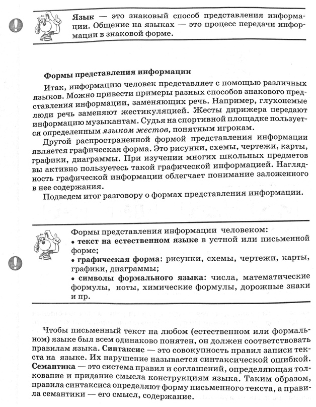
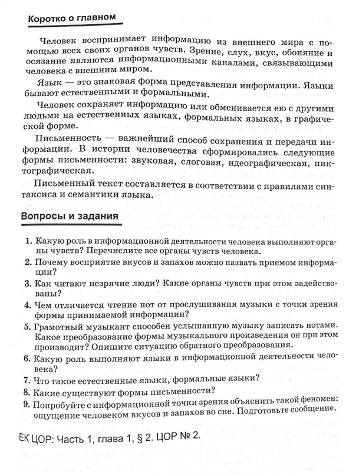
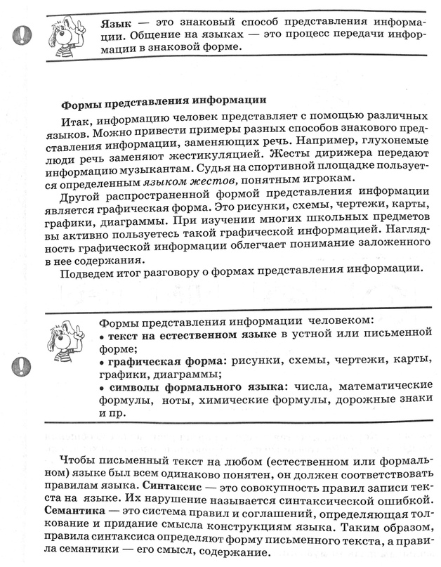
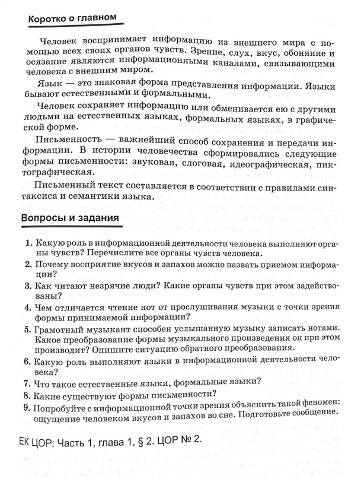

Выполните задания теста:
Человек воспринимает информацию из окружающего мира с помощью своих органов чувст - их ...
Информация представлена непрерывно в:(1.математическом уравнении 2.записи на формальном языке 3.изображении 4.записи шифра)
Звуковой знаковой системой не является:(1.график 2.щебет птиц 3.музыка 4.рычание зверя)
Информация представлена дискретно в:(1.математическом выражении 2.музыкальном произведении 3.изображении 4.звучании музыкального инструмента)1